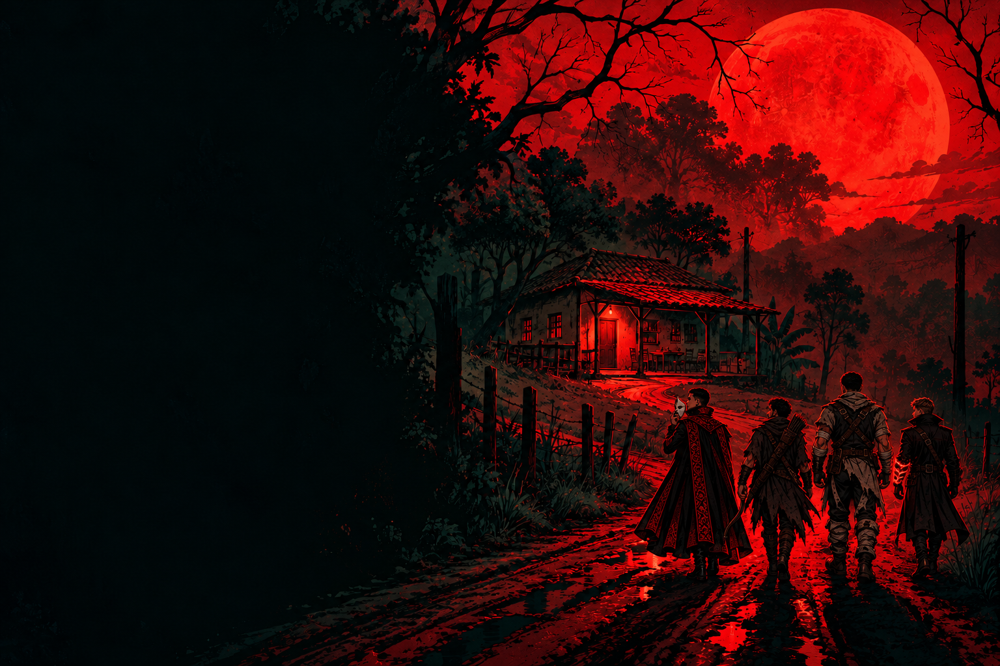

Quatro desconhecidos.
Octávio, Damião, Baltazar e Turak. Cada um chegou por um motivo. Nenhum sabe o que a noite guarda.

HORROR RURAL · MISTÉRIO · ESCOLHAS
Toda promessa tem um preço.
Esta noite, alguém vem cobrar.
Quatro desconhecidos. Uma cidade que fecha as portas.
O que vocês fazem quando o medo sabe seus nomes?
NÃO ATENDA À TERCEIRA BATIDA.
UMA HISTÓRIA.QUATRO HISTÓRIAS, UMA NOITE
Cada um carrega algo que não consegue explicar.
Esta noite, os caminhos se cruzam.
PARA UMA ÚNICA NOITE
Uma experiência de horror e investigação para jogar sozinho ou compartilhar com a mesa. A verdade não vem inteira. E nem todo caminho deixa as mesmas pessoas de pé.
Octávio, Damião, Baltazar e Turak. Cada um chegou por um motivo. Nenhum sabe o que a noite guarda.
Leia as cenas, discuta com o grupo e escolha ações. O caderno reúne apenas as pistas que vocês descobrirem.
Confrontos e conversas mudam relações, informação e sobreviventes. Uma pista perdida não encerra a história.
Uma sessão de 4–6 horas em mesa. No seu ritmo se jogar sozinho.
Progresso salvo neste navegador. Durante o jogo, use “Salvar / opções” para guardar uma cópia.
Voltar ao início